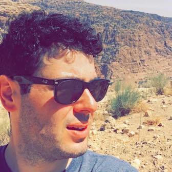

Research Scientist, Cyber Security
If you are a student and interested in working with me, please click here!
|
» cv
Research and bio
My research is centered around the security and privacy of social and information networks, with an emphasis on problems that broadly impact the way people use technology and the Internet.
I received my PhD in Electrical and Computer Engineering from the University of British Columbia (UBC) under the mentorship of Konstantin Beznosov and Matei Ripeanu. My thesis presented one of the first security analyses of malicious socialbots on the web.
Current projects
Internet Security Posture Assessment
I'm collaborating with ZMap and Censys folks at UMich to explore how one would asses the security posture of a country on the Internet.
Mobile Cryptography Analytics
I'm collaborating with LERSSE folks at UBC to build a cloud-based service for analyzing cryptographic API (mis)use in Android applications.
Bitcoin and Blockchains
I'm collaborating with QU folks to investigate the feasibility of deanonymizing Tor hidden service users by exploiting public Bitcoin information.
Enterprise Log Security Analytics
I'm collaborating with the Cyber Security team on building data-driven cyber security defences for the enterprise.
Apr, 2018
I'm attending IEEE ICDE 2018. See you in Paris!
Mar, 2018
I'm co-presenting our Bitcoin/Tor privacy work at the FTC
Jan, 2018
Our work on Bitcoin/Tor privacy has been covered by WIRED
I'm speaking at the 6th Katara Tech Forum on Blockchain Technology
» all
Selected publications
Yazan Boshmaf, Matei Ripeanu, Konstantin Beznosov, and Elizeu Santos-Neto
Proc. 8th ACM Workshop on Artificial Intelligence and Security
AI-Sec ’15, Denver, CO, Oct 2015
Yazan Boshmaf, Dionysios Logothetis, Georgos Siganos, Jorge Lería, Jose Lorenzo, Matei Ripeanu, and Konstantin Beznosov
Proc. of 2015 Network and Distributed System Security Symposium
NDSS ’15, San Diego, CA, Feb 2015
Yazan Boshmaf, Konstantin Beznosov, and Matei Ripeanu
Proc. of 2013 IEEE/ACM International Conference on Advances in Social Networks Analysis and Mining
ASONAM ’13, Niagara Falls, Canada, Aug 2013 — best paper award
Yazan Boshmaf, Ildar Muslukhov, Konstantin Beznosov, Matei Ripeanu
Proc. of 5th USENIX Workshop on Large-Scale Exploits and Emergent Threats
LEET ’12, San Jose, CA, Apr 2012
Yazan Boshmaf, Ildar Muslukhov, Konstantin Beznosov, and Matei Ripeanu
Proc. of 27th Annual Computer Security Applications Conference
ACSAC ’11, Orlando, FL, Dec 2011 — outstanding paper award
|